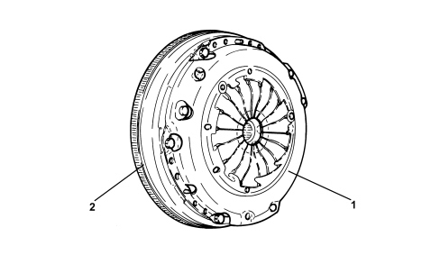
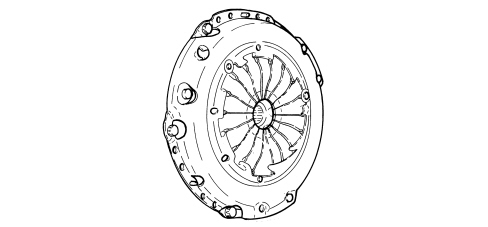
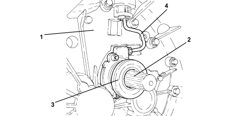
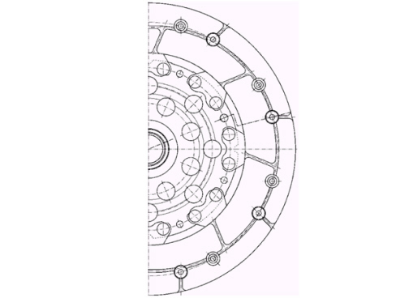
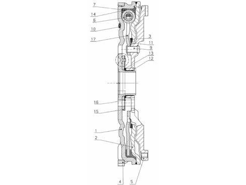

GENERAL REMARKS - CLUTCH
- Path
- Descriptions > 18 CLUTCH UNIT > GENERAL REMARKS - CLUTCH
- Kind
- system description
- Applies to
- engines: 2.2; all production periods
- Interactive page
- https://sloeber94.github.io/elrnDB-fCrm/en/#/194001959
Applies to: engines: 2.2; all production periods
CLUTCH - FLYWHEEL ASSEMBLY

1. Clutch
2. Flywheel
The clutch-flywheel system fitted to this engine version is supplied by LUK. Its features are as follows:
- dry, single plate clutch with thrust operation
- dual mass type damping flywheel.
Clutch assembly

Driven friction plate
CLUTCH RELEASE CONTROLS
In this hydraulic clutch release system, the release actuator consists of an annular cylinder fitted in the clutch bell housing coaxially with the gearbox mainshaft and integral with the thrust bearing. The release action is exerted directly on the thrust spring without any intervening linkage as in conventional systems. The application of this system means that performance can be maintained unchanged during the operational life of the clutch and it helps reduce noise and vibrations transmitted by the pedal.
The two main system components are the clutch release pump and the hydraulic actuator cylinder, which is responsible for generating the flow of fluid requird to release the clutch.

1. Clutch casing
2. Main shaft
3. Hydraulic clutch actuator
4. Fluid pipe
DUAL MASS FLYWHEEL

This flywheel is dual mass damping type consisting of two masses, one integral with the crankshaft and the other with the gearbox mainshaft, via the clutch plate. A flexible torsional damping system is created between these two masses with a system of springs (positioned in parallel) with differential stiffness. This main feature of this type of flywheel is its ability, unlike a normal flywheel, to alter the torsional resonance speed to below the engine service speed.
This type of flywheel damps torque fluctuations in two stages to reduce power transmission vibration and roughness in a more effective and targeted manner.

1. Main flywheel
2. Main flywheel cover
3. Friction plate
4. Toothed wheel
5. Secondary flywheel
6. Spring pack
7. Lubricant
9. Rivet
10. Balancing element
11. Diaphragm spring
12. Roller bearing
13. Friction ring
14. Spring pack mount
15. Main flywheel cover
16. Main flywheel cover cap
17. Flange